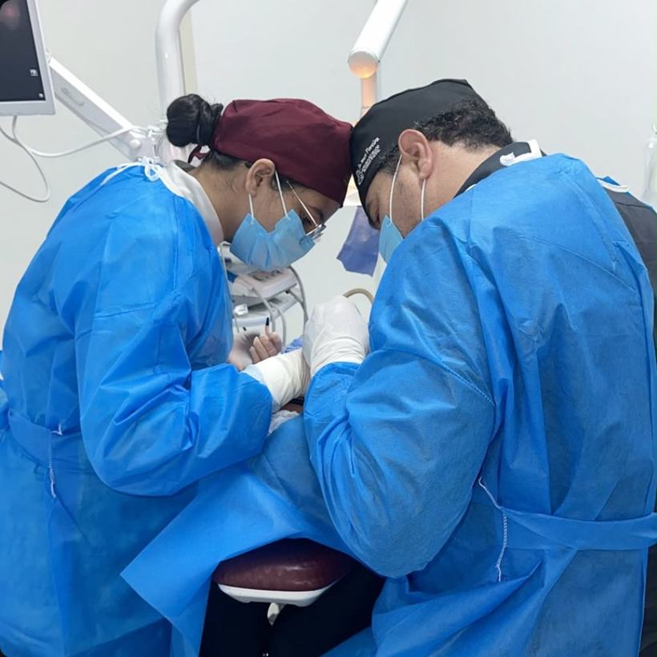
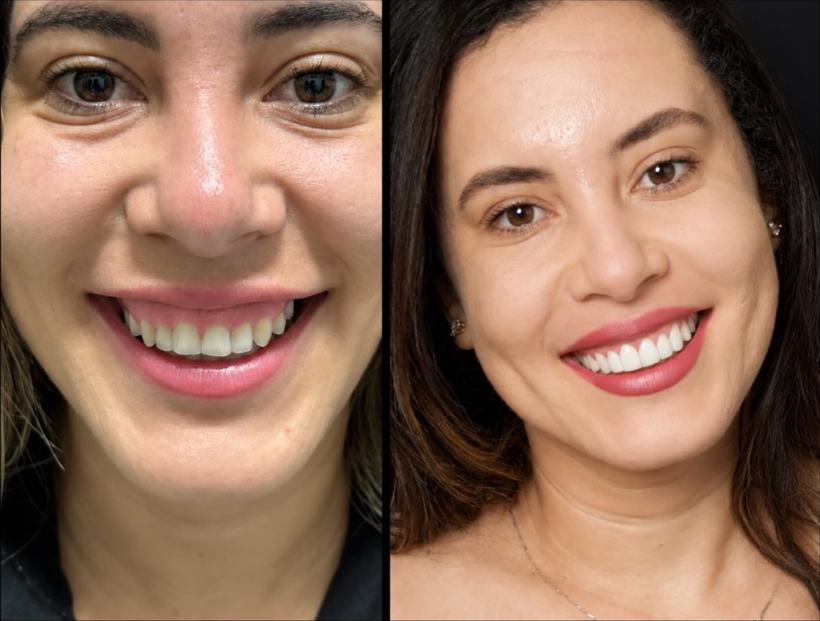
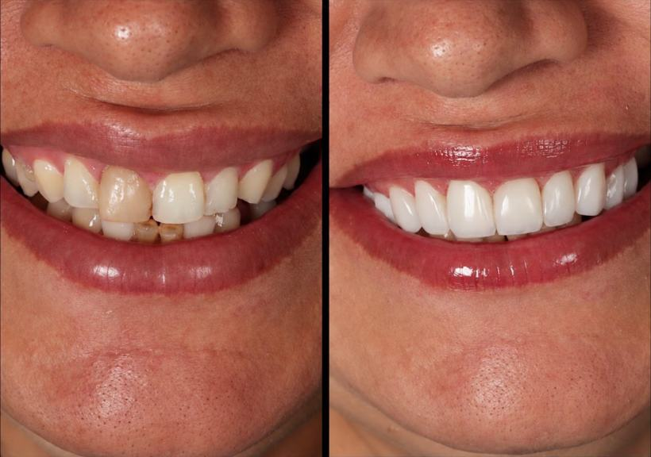
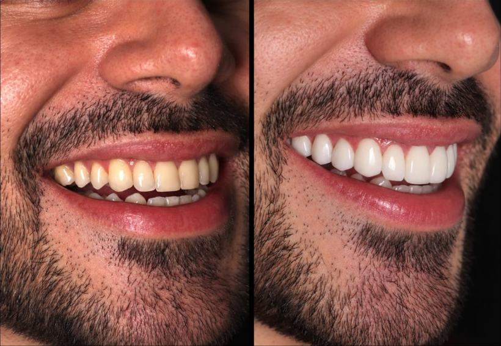
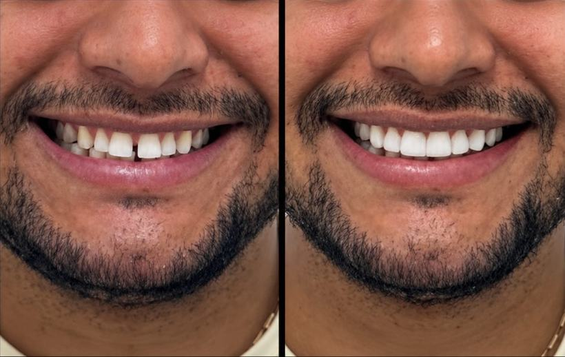
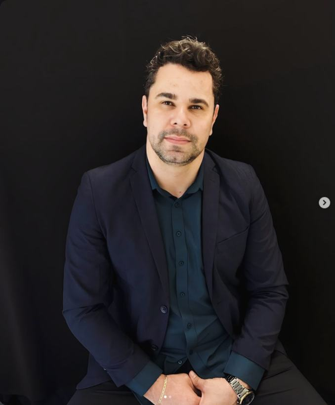
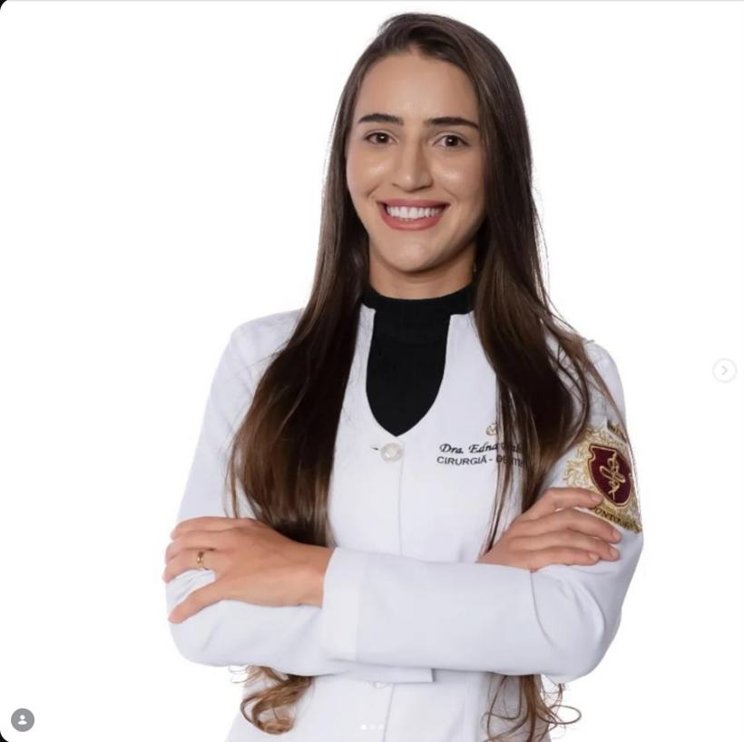
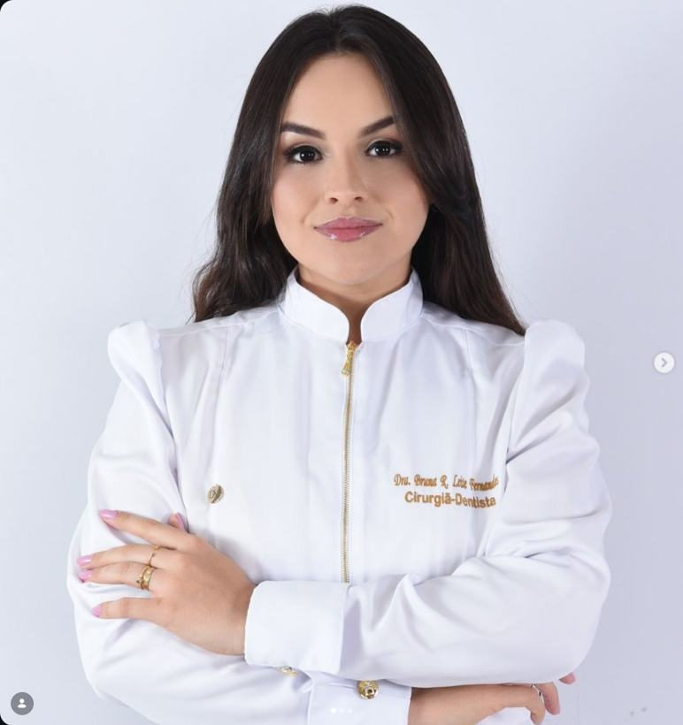

Cirurgia e cuidado para o seu sorriso e o seu rosto
Clínica de cirurgia bucomaxilofacial e odontologia para toda a família, com atendimento em Caetité e Ibitira.

Serviços
Da cirurgia complexa à estética do sorriso, no mesmo lugar.
Cirurgia de siso complexo
Para sisos impactados, deitados ou próximos a nervos e raízes. Usamos técnicas como o corte do dente em partes e, quando necessário, sedação, sempre com acompanhamento do cirurgião bucomaxilofacial.
Cirurgia e traumatologia bucomaxilofacial
Cirurgias na boca, maxilares, face e pescoço: traumas, infecções, cistos, tumores e correções de mordida.
Implantes dentários
Reposição de dentes com planejamento cirúrgico e acompanhamento do início ao fim.
Facetas em resina e estética do sorriso
Facetas, clareamento dental e gengivoplastia para melhorar cor, formato e harmonia dos dentes de forma natural.
Endodontia e cirurgia oral menor
Tratamento de canal e pequenas cirurgias orais, com atualização constante da equipe.
Odontopediatria e clínica geral
Atendimento cuidadoso para crianças e adultos, da prevenção ao tratamento.
Por que escolher a ImplanFace
Resultados
Transformações reais de pacientes, em facetas de resina, clareamento e gengivoplastia.

AntesDepois
AntesDepois
AntesDepois
AntesDepoisResultados individuais variam. Procedimentos estéticos realizados pela Dra. Janne Trindade.
Sobre a clínica
A ImplanFace reúne cirurgia bucomaxilofacial e odontologia geral. Nosso propósito é ir além de cuidar dos dentes: devolver confiança e transformar vidas através de cada sorriso.
Bahia
Bahia
Nossa equipe


